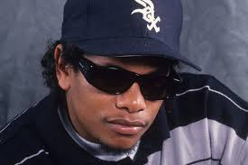
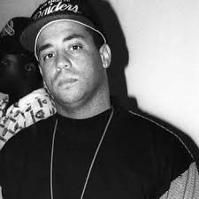
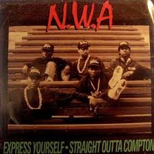
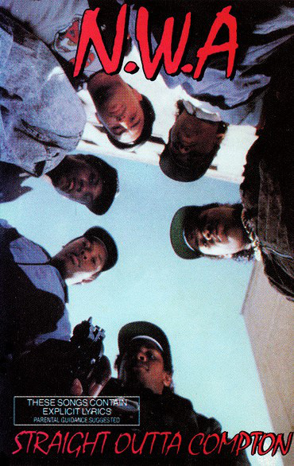
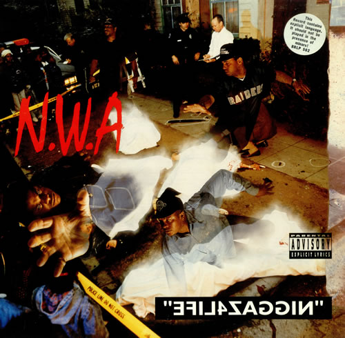

N.W.A
N. W. A (Niggaz Wit Attitudes — «Нігери з Позицією») — американський хіп-хоп-гурт з Комптона, Каліфорнія, яку багато хто вважає одним із засновників піджанру гангста-реп. Ця група існувала з 1986 по 1991 роки і викликала велику кількість суперечок у зв'язку з відвертим характером їх текстів. Згодом група була заборонена на багатьох головних радіостанціях США і навіть іноді заборонялися їх гастролі. Група продала на сьогоднішній день близько 30 мільйонів копій своїх дисків тільки в США. Їх перший альбом, Straight Outta Compton, позначив початок нової ери гангста-репу, бо їх творчість і підняття соціальних проблем були революційними в рамках жанру.
Заснування
Група була заснована Eazy-E на лейблі Ruthless Records, який він заснував разом з Джеррі Хеллером на гроші від продажу наркотиків. Спочатку група складалася з Eazy-E і Ice Cube, який вже встиг записати на Ruthless Records кілька треків. Продюсером гурту став Dr. Dre, потім в неї вступив DJ Yella. Раніше вони були членами групи World Class Wreckin' Cru
Возз'єднання групи
У 1995 році група возз'єдналася в повному складі, але нічого не встигла записати у зв'язку із захворюванням (ВІЛ) та подальшою смертю Еріка (Eazy-E).
Наприкінці 90-х Ren, Cube і Dre записали трек і зняли кліп під назвою Hello!
Склад

Eazy-E - засновник N. W. A. і власник лейблу Ruthless Records. Після того, як його вигнали з 10 класу середньої школи, почав торгівлю наркотиками, що дало йому великий прибуток. На ці гроші він разом з Джеррі Хеллером заснував N. W. A. Після приголомшуючого успіху альбому Straight Outta Compton з групи пішов Ice Cube. Після цього Eazy стає фактичним лідером групи. Після випуску Niggaz4Life і відходу Dre група остаточно розпадається, а ворожнеча між Eazy-E і Dr. Dre вирувала протягом декількох наступних років.

Dr.Dre прийшов у групу після відходу з World Class Wreckin' Cru. Зустрівши Ice Cube в 1986 році, почали разом писати тексти для Ruthless Records, потім Eazy-E заснував N. W. A. Після фінансових розбіжностей, Dre пішов з групи в 1991 році
Arabian Prince — заснував групу разом з Dr. Dre і Eazy-E у 1986 році. Залишив у 1988 році. Будучи в складі групи записав такі треки, як «Panic Zone» і «Something 2 dance 2». Є співпродюсером деяких треків.

Ice Cube Прийшов у групу другим після Eazy-E, але покинув групу після виходу першого альбому. Після відходу неодноразово піддавався насмішкам з боку решти учасників групи, але Cube не дозволяв заплямувати свою репутацію і відповідав зустрічними диссами (disrespect — неповага) настільки добре, що після дисса «No Vaseline» N. W. A. так і не змогли гідно відповісти.

MC Ren Вступив в групу в 1986 році, у віці 17 років. Посприяв цьому Eazy-E. Після розпаду групи в 1991 почав сольну кар'єру.

DJ Yella Прийшов в групу разом з Dr. Dre. Залишався в N. W. A. до її кінця, а після розпаду залишився разом з Eazy-E на лейблі Ruthless Records. Після смерті Eazy-E записав сольний альбом, присвячений Еріку.
Дискографія



Альбоми
- 1988 — Straight Outta Compton
- 1991 — Niggaz4Life
Сингли
- 1987 — Panic Zone
- 1988 — Straight Outta Compton
- 1988 — Express Yourself
- 1988 — Fuck tha Police
- 1988 — Gangsta Gangsta
- 1991 — Alwayz Into Somethin'
- 1991 — Appetite For Destruction
- 1991 — Dayz Of Wayback
- 2000 — Chin Check
- 2000 — Hello
Компіляції
- 1987 — N. W. A. and the Posse (1989 було перевидання)
EP
- 1990 — 100 Miles and Runnin'
У масовій культурі
Посилання